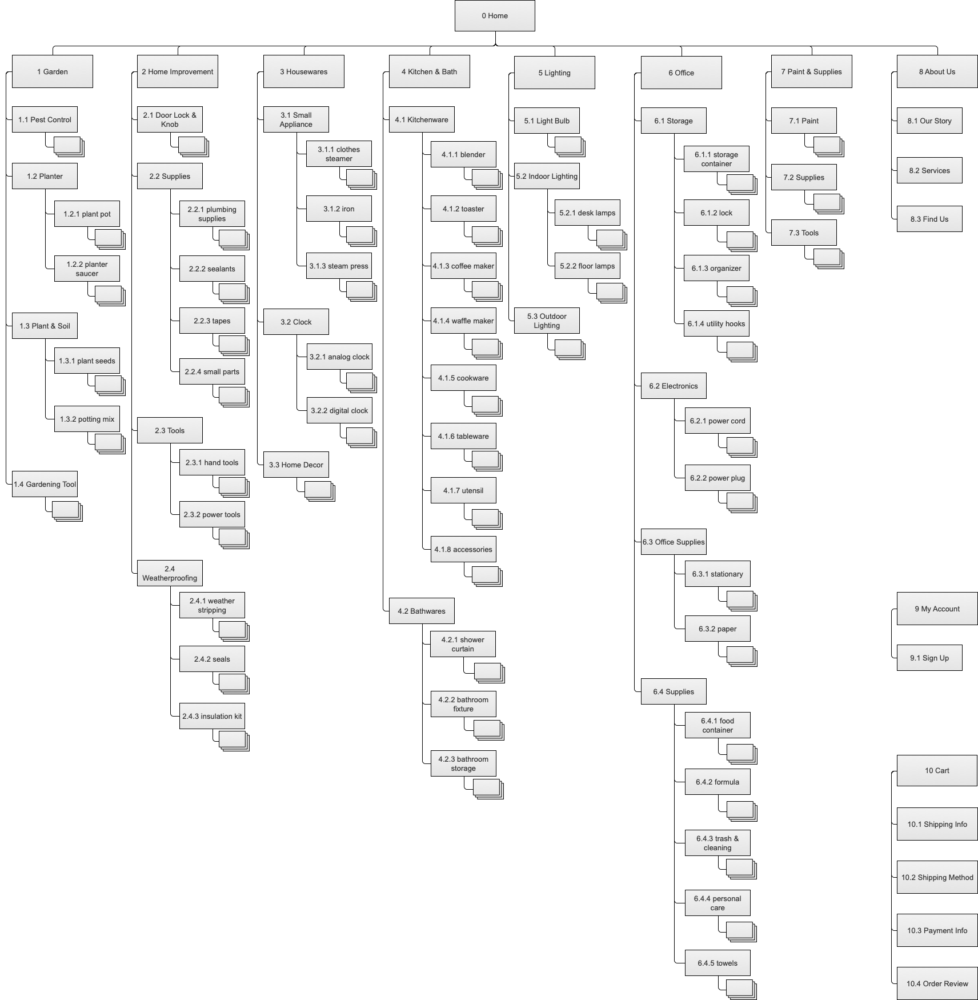

DICKSON BROS CO.
Research｜Information Architecture｜UI Design
Dickson Bros Co. is an established hardware store located near Harvard Square in Cambridge, MA. The business has an existing website. The goal of this project is to upgrade the website and incorporate a carting function.
I used the double diamond model as my design process. The project took two weeks to finish.
In this project, I examined user mental models, learned common design patterns, and deployed several techniques for usability testing.
DISCOVER
- Examined Dickson Bros Co. website for existing issues and explore room for improvement
- Studied competitors’ website to establish essential features and conventions
- Understood Dickson Bros’ business goal and vision, and incorporated it into design considerations
Due to the two-week time constraint, I started with evaluative and generative researches in tandem.
I first conducted heuristic evaluation on the existing website, and uncovered 22 usability issues, 5 of which were medium to severe ones that prevented customers from completing a task.
I then visited True Value®, The Home Depot® and Office Depot® for comparative analysis, and discovered common patterns on icons, social integration and page layout. I incorporated these conventions in my design works.
DEFINE
- Conducted user interviews to uncover pain points and latent needs
- Analyzed data to find patterns and set the problem/solution statement
- Used card sorting to establish basic information architecture framework
Contextual inquiries and user interviews were done to gain insight from target customers. For a logistic reason, I also asked participants to card sort immediately after the interview. Results were then analyzed to narrow user problems and create information architecture.
“I wanna know the product is authentic!”
– Kevin O.
“Got a defective product on [e-commerce site] even the review was good.”
– Fenny G.
One particular problem was the exasperation on purchasing “wrong” products, which became a main focus for my problem statement. Some findings for edge use also intrigued me. But I decided to leave those concerns for later.

The biggest challenge of this project was its information architecture (IA). Dickson Bros carries over 5000 SKUs in its inventory, ranging from consumer housewares to industrial hardware. Many ambiguities existed in classifications.
After analysis of all card sort results based on 100 samples, it was still hard to find a mutually exclusive classification system. So I moved on to examine the mental model of my target customers, working around my way to explore alternative solutions for the IA.
DESIGN
- Used paper prototyping to detect issues on early design
- Conducted usability test to ensure the flawless user flows
- Fine tuned page layout, content strategy and interactive elements
Hand sketching is my favorite UX design tool. Having a couple usability tests with the paper prototype, I discovered major flaws in my user flow, page layout and information hierarchy.
To address the pain point discovered in user interviews, I introduced a product review page with extensive information. This helps customer build confidence when placing an order.
Iterations were made based on user feedbacks. Here I list two major changes that improve the usability.
Initially, categories were listed alphabetically. Giving the IA ambiguity, most participants clicked a wrong category. To fix this problem, I re-ordered them based on specificity, so users would see specific categories before generic ones when scanning from the top.
I also iterated the checkout page multiple times to find the right balance of information load.
Axure was then used to digitize hand sketches into wireframes, followed by additional usability tests and design iterations. The result was fine–tuned microcopies, UI elements and user experience.
The average satisfaction after using the prototype is rated 8.9 out of 10 by test participants.
—
OUTCOMES
There are four major takeaways from this project.
Don’t start with a blind sight! Study what competitors did and apply those ideas intelligently.
Understanding users’ mental model makes creative solutions possible. In my project, it helped me on seemingly insurmountable information architecture obstacles.
Users want the right amount of information at the right time – no more and no less.
Taking advantage of low-tech approaches. It helps uncover early usability issues and saves huge amount of works later on.
What is next?
The good work does not stop here. My next step is to integrate and test a product comparison feature, which was mentioned by more than 50% of the users I interviewed.